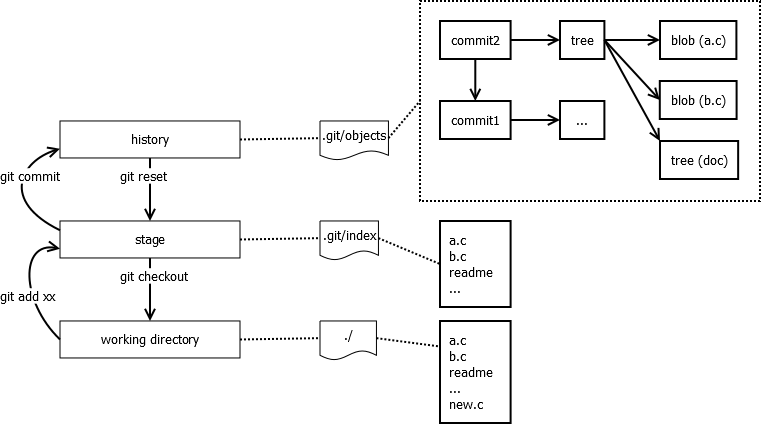

Git
git里的三个区域概念：
-
working directory：就是你所操作的那些文件
-
stage(index)：暂存区域，本质上是个文件，也就是.git/index
-
history：你所提交的所有记录，文件历史内容等等。git是个分布式版本管理系统，在你本地有项目的所有历史提交记录；文件历史记录；提交日志等等。
git中还有三类常用对象：
-
blob：用于表示一个文件
-
tree：用于表示一个目录，索引到若干文件或子目录
-
commit：用于表示一次提交(commit)

proxy
国内镜像
git remote add cdn https://github.com.cnpmjs.org/haiwen/seahub.git
git config --global url.https://hub.fastgit.org/.insteadOf https://github.com/
ssh 代理
How to force Git to use socks proxy over its ssh connection
vim ~/.ssh/config
Host github.com
HostName github.com
User git
ProxyCommand nc -v -x 127.0.0.1:1080 %h %p
git command
git reset
-
git reset HEAD^ a.py：回退a.py这个文件的版本到上一个版本 -
git reset HEAD~1：默认为--mixed,git status后为 Changes not staged for commit, 即git add之前的状态。 -
git reset --soft HEAD~1：git status后为 Changes to be committed, 即git add之后的状态。 -
git reset --hard HEAD~1：所有更改都被丢弃
git stash
-
git stash：备份当前的工作区的内容，从最近的一次提交中读取相关内容，让工作区保证和上次提交的内容一致。同时，将当前的工作区内容保存到Git栈中。 -
git stash pop：从Git栈中读取最近一次保存的内容，恢复工作区的相关内容。由于可能存在多个Stash的内容，所以用栈来管理，pop会从最近的一个stash中读取内容并恢复。 -
git stash list：显示Git栈内的所有备份，可以利用这个列表来决定从那个地方恢复。 -
git stash clear：清空Git栈。此时使用gitg等图形化工具会发现，原来stash的哪些节点都消失了
git show
-
git show ebff：查 log 是 commit ebff810c461ad1924fc422fd1d01db23d858773b 的內容 -
git show v1：查 tag:v1 的修改內容 -
git show v1:test.txt：查 tag:v1 的 test.txt 檔案修改內容 -
git show HEAD：此版本修改的資料 -
git show HEAD^：前一版修改的資料 -
git show HEAD^^：前前一版修改的資料 -
git show HEAD~4：前前前前一版修改的資料
git grep
-
git grep "te" v1：查 v1 是否有 "te" 的字串 -
git grep "te"：查現在版本是否有 "te" 的字串
git branch
-
change branch name：
git branch -m <oldname> <newname> -
rename the current branch：
git branch -m <newname> -
delete merged branck, use
-Dto delete unmerged branch：git branch -d [name] -
delete remote branch：
git push origin :remote-branch -
push local branch to remote branch：
git push origin local-branch:remote-branch -
fetch remote branch to local branch：
git fetch origin remote-branch:local-branch -
List referenced remote branches：
git branch -r
git remote
-
检出仓库：
git clone git://github.com/jquery/jquery.git -
查看远程仓库：
git remote -v -
添加远程仓库：
git remote add [name] [url] -
删除远程仓库：
git remote rm [name] -
修改远程仓库：
git remote set-url --push [name] [newUrl] -
拉取远程仓库：
git pull [remoteName] [localBranchName] -
推送远程仓库
git push [remoteName] [localBranchName]
.gitignore does not work
git rm --cached -r .
git add .
git status
Revert changes to a file in a commit
git show some_commit_sha1 -- some_file.c | git apply -R
export git log
git --no-pager log > log.txt
恢复本地已删除的 commit
git reflog
git reset --hard 98abc5a
获取远程 pull request，并新建一个分支
git fetch origin pull/pull-request-ID/head:local-branch-name
获取远程 tag，并基于某一 tag 新建一个分支
git fetch origin tag v7.1.9-pro
git fetch --tags --prune
git checkout tags/v1.0 -b NewBranch
Clean up outdated references in local repository
git remote prune origin
mac 下 git 命令自动补全
安装 Homebrew
/usr/bin/ruby -e "$(curl -fsSL https://raw.githubusercontent.com/Homebrew/install/master/install)"
安装 bash-completion
brew install bash-completion
brew info bash-completion
Add the following line to your ~/.bash_profile :
[[ -r "/usr/local/etc/profile.d/bash_completion.sh" ]] && . "/usr/local/etc/profile.d/bash_completion.sh"
下载 git-completion.bash
wget https://raw.githubusercontent.com/git/git/master/contrib/completion/git-completion.bash
mv git-completion.bash ~/.git-completion.bash
配置 ~/.bashrc
Add the following line to your ~/.bashrc :
source ~/.git-completion.bash